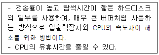
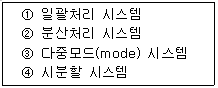
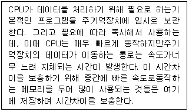
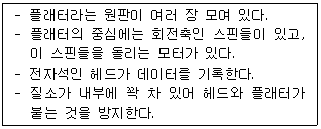
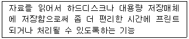
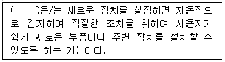
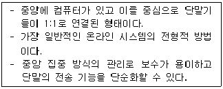

PC정비사-1급 (2016-10-09 기출문제)
1과목: PC운영체제
1. Windows 7 에서 사용할 수 없는 파일 시스템은?
- NTFS
- FAT32
- EXT2
- CDFS
(정답률: 71%)

2. 시스템 처리 방식에 대한 설명 중 올바른 것은?
- 실시간 처리 시스템(Real Time Processing System)은 데이터가 발생하는 즉시 컴퓨터에서 처리가 이루어지는 시스템으로 은행의 온라인이나 각종 예약업무에 대표적으로 사용된다.
- 일괄 처리 방식(Batch Processing System)은 CPU가 한 사용자로부터 다른 사용자로 빠르게 교환시켜 주는 시스템으로 많은 사용자가 동시에 사용할 때도 실제는 한 개의 컴퓨터를 사용하고 있지만 각 사용자는 독립된 컴퓨터로 작업하는 느낌을 가질 수 있다.
- 시분할 시스템(Time Sharing System)은 여러 개의 작업을 하나로 묶어 자동적으로 한 작업에서 다른 작업으로 연속될 수 있도록 한 처리 방식이다.
- 시분할 시스템(Time Sharing System)은 주로 항공표, 기차표 예매 등에 사용된다.
(정답률: 66%)
3. Windows 7 Professional 을 사용하는 PC의 특정 디스크에서 임의의 파일을 찾아보려고 할 때 사용되는 방법이 잘못된것은?
- 바탕화면에서 [Windows]+[F3]키를 누른다.
- 시작메뉴에서 [프로그램 및 파일 검색]을 클릭한다.
- 내 컴퓨터에서 오른쪽 마우스 버튼을 누른 후 [S]키를 누른다.
- Windows 탐색기에서 [Ctrl]+[E]키를 누른다.
(정답률: 66%)
4. 다음에서 설명하는 것은?

- Direct Memory Access
- Clocking
- Spooling
- Waiting
(정답률: 68%)
5. Windows 7 의 버전이 아닌 것은?
- Windows 7 Starter
- Windows 7 Home Premium
- Windows 7 Media Center Edition
- Windows 7 Enterprise
(정답률: 71%)
6. 운영체제에서는 응용 프로그램들의 원활한 수행을 위하여 다양한 서비스를 제공한다. 다음 중 응용프로그램을 원활히 수행하기 위하여 사용 되어지는 서비스의 형태가 아닌 것은?
- 멀티태스킹 운영체제에서는 여러 개의 프로그램이 동시에 실행될 수 있게 하는데, 각 응용프로그램이 다른 응용프로그램에게 순서를 넘기기 전에 얼마동안의 시간을 배정해야할지 등을 결정한다.
- 프린트출력과 같은 배치작업들을 대신 관리해줌으로써, 실행중인 응용프로그램이 이런 종류의 작업으로부터 해방될 수 있도록 한다.
- 하드디스크, 프린터, 다이얼업 포트 등 장착되어 있는 하드웨어 주변장치들로부터 이루어지는 입출력을 관리한다.
- 사용자들이 직접 관심을 가지고 있는 작업을 처리하는 프로그램을 말한다.
(정답률: 65%)
7. 리눅스에 대한 설명이 아닌 것은?
- 유닉스 계열의 운영체제가 아니다.
- 1969년 벨 연구소에서 개발되어 현재까지 꾸준히 발전을 하는 운영체제이다.
- 공개를 원칙으로 하기 때문에 무료로 사용이 가능하다.
- 핀란드의 Linus Torvals에 의해 1991년에 만들어 졌다.
(정답률: 50%)
8. 운영체제의 발달과정 순서로 올바른 것은?

- ④ → ③ → ② → ①
- ① → ② → ③ → ④
- ① → ③ → ④ → ②
- ④ → ② → ③ → ①
(정답률: 61%)
9. Windows 7 실행 명령 창에서 레지스트리 편집기 프로그램을실행할 수 있는 명령은?
- sfc
- scanreg
- winzip
- regedit
(정답률: 77%)
10. 운영체제가 아닌 것은?
- Linux
- Windows 7
- Oracle
- MAC OS
(정답률: 78%)
11. Windows 7 Professional 의 실행 명령 창에서 사용할 수 없는 명령어는?
- REGEDIT32
- MSINFO32
- EXPLORER
- MSTSC
(정답률: 40%)
12. Windows 7 Professional 의 로컬 영역 연결 상태에서 볼 수 있는 프로토콜이 아닌 것은?
- Internet Protocol Version 4 (TCP/IPv4)
- Internet Protocol Version 6 (TCP/IPv6)
- VDSL-PPP
- Link-Layer Topology Discovery Responder
(정답률: 64%)
13. Windows 7 Professional 의 Microsoft ManagementConsole 에 속하지 않는 것은?
- 인쇄 관리
- iSCSI 초기자
- 작업 스케줄러
- 가상 메모리
(정답률: 44%)
14. 에러를 자신이 찾아 수정할 수 있는 코드는?
- 패리티 코드(Parity Code)
- 해밍 코드(Hamming Code)
- 그레이 코드(Gray Code)
- BCD코드(Binary Coded Decimal)
(정답률: 62%)
15. 레지스트리에서 시스템에 연결된 하드웨어와 하드웨어 제어기 정보 및 소프트웨어에 대한 정보가 저장되어 있는곳은?
- HKEY_CLASSES_ROOT
- HKEY_CURRENT_USER
- HKEY_LOCAL_MACHINE
- HKEY_CURRENT_CONFIG
(정답률: 60%)
2과목: PC주변기기
16. 직렬 방식의 통신이 아닌 것은?
- USB
- IEEE1394
- RS232C
- PCI BUS
(정답률: 51%)
17. PC에서 사용하는 비디오 카드의 어댑터 종류로 올바른 것은?
- PCI, PCI-EXPRESS, AGP
- PCI, AGP, SCSI
- PCI, ATX, AGP
- AGP, EIDE, PCI-EXPRESS
(정답률: 69%)
18. 디지털 카메라를 구성하는 요소 중 CCD(Charge Coupled Device)의 설명으로 올바른 것은?
- 어두운 곳에서 촬영할 때 빛을 발광하여 사진을 찍을 수 있게 하는 장치
- 셔터속도와 연속촬영을 제어하는 장치
- Preview나 Review용도로 사용하는 액정화면
- 빛의 신호를 전기적 신호로 변환시키는 기능을 가진 장치
(정답률: 58%)
19. 다음은 무엇에 대한 설명인가?

- 롬(ROM)
- 플래시롬(Flash ROM)
- 캐시 메모리(Cache Memory)
- 마스크 롬(Mask ROM)
(정답률: 72%)
20. 다음에 설명하는 컴퓨터 부품은?

- CD-ROM 드라이브
- 하드디스크 드라이브
- 플로피디스크 드라이브
- CD-RW 드라이브
(정답률: 75%)
21. 스캐너로 입력한 사진을 컴퓨터로 가져 오기 위해 필요한 드라이버로 올바른 것은?
- IDE
- GUI
- CUI
- TWAIN
(정답률: 50%)
22. 모니터 화면의 한 화소는 빨강, 녹색, 파랑의 3개 색소로구성되어 있다. 다음 중 화점 간격을 나타내는 것은?
- 해상도
- 도트 피치
- 수평 주파수
- 수직 주파수
(정답률: 63%)
23. 다음에서 설명하고 있는 프린터 관련 용어는?

- Swap
- Spool
- DMA
- Overplay
(정답률: 66%)
24. 프린터 연결시 사용할 수 있는 포트로 올바른 것은?
- RS-232C만 가능
- IEEE-1284만 가능
- USB만 가능
- RS-232C, IEEE-1284, USB 모두 가능
(정답률: 65%)
25. 분산 처리 환경과 가장 밀접한 관계를 가지는 것은?
- 클라이언트/서버
- 중앙 처리 장치
- 가상 현실
- WYSWYG
(정답률: 60%)
26. 키보드의 자판에 대한 설명으로 잘못된 것은?
- 세벌식 한글 자판은 현재 Windows 7에서는 사용할 수 없고, 별도의 프로그램을 설치해야만 사용 가능하다.
- 드보락(Dvorak) 키보드는 가장 자주 사용되는 문자들을 손가락들이 처음 놓이는 기본 자리에 배열해 놓고 있다.
- 현재 국가 표준으로 되어 있는 한글 자판은 두벌식 자판이다.
- 쿼티(QWERTY) 키보드에서는 가장 자주 사용되는 문자들이 분산 배치되어 있다.
(정답률: 57%)
27. 사운드카드에서 사용하는 음원의 종류가 아닌 것은?
- AM 음원
- FM 음원
- MIDI 음원
- PCM 음원
(정답률: 48%)
28. 프린터에서 문서 출력 시 패러럴포트(Parallel Port)를 이용할 경우 전송속도가 가장 높은 모드는?
- EPP
- SPP
- PPP
- DPP
(정답률: 42%)
29. 전원공급기에서 직류 출력전압이 안정되면 'H'상태로 되고, 정상치 이하로 떨어지면 'L'상태로 되는 단자는?
- +12 Volt
- -12 Volt
- Power Good
- +5 Volt
(정답률: 51%)
30. 다음 중 다른 세 가지와 달리 수치가 클수록 성능이 낮아지는 것은?
- CPU 성능(MHz)
- RAM의 Access 속도(ns)
- CD-ROM 성능(배속)
- LAN 연결속도(bps)
(정답률: 71%)
3과목: 디지털 논리회로
31. 펄스(pulse) 진폭 변조와 펄스 위상 변조를 비교한 설명으로 옳지 않은 것은?
- 펄스 위상 변조가 채널수를 더 크게 할 수 있다.
- S/N비는 펄스 진폭 변조가 더 떨어진다.
- 채널수가 같을 때는 펄스 진폭 변조 방식의 펄스폭이 넓어도 된다.
- 모두 다중통신 방식에 적합하다.
(정답률: 37%)
32. 다이오드에 관한 설명 중 옳지 않은 것은?
- 한쪽 방향으로만 전류가 흐른다.
- 교류를 직류로 변환시키는 역할을 한다.
- 복조파에 실려 있는 신호파형을 축출하는 것을 검파 다이오드라고 한다.
- 제너 다이오드는 역방향 전류가 가해졌을 때 전압 변동이 크다.
(정답률: 51%)
33. 전자계산기의 기억요소(Memory Element)로 사용하는 장치가 아닌 것은?
- Disk
- Flip Flop
- Decoder
- Register
(정답률: 46%)
34. 2진수 ‘(11011)2’을 10진수로 변환한 값은?
- 16
- 27
- 39
- 54
(정답률: 68%)
35. 입력이 16 개인 Decoder 의 출력 개수는?
- 3
- 4
- 2에 16승
- 0
(정답률: 47%)
4과목: PC유지보수
36. CPU, 메인보드칩셋, 메모리가 서로 호환 되지 않는 것은?
- 코어 2듀오 E8400 - intel G41 - DDR3 10600
- 셀러론 D 프레스캇 350 - Intel 865 - DDR 3200
- 셀러론 G 1610 - intel P43 - DDR2 8500
- 코어 i5 3570 - Intel B75 - DDR3 12800
(정답률: 47%)
37. AWARD BIOS의 Advanced BIOS Features 메뉴의 세부항목에 대한 설명 중 올바른 것은?
- Virus Warning - 하드디스크의 부트섹터를 보호하는 옵션이므로, 운영체제 설치 시에는 반드시 Enable로 설정하여 부트섹터를 수정 못하도록 설정한다.
- CPU Internal Cache - 이 옵션을 켜놓으면 시스템 속도가 떨어지므로 반드시 Disabled로 설정한다.
- Boot Up Floppy Seek - 부팅할 때 바이오스가 플로피 디스크 드라이브를 검색하게 하는 항목으로, 이 기능을 Disabled로 설정하면 Floppy Disk 드라이브를 사용할 수 없다.
- Security Option - System을 선택하면 바이오스 셋업에 들어올 때와 부팅될 때 모두 암호를 물어본다.
(정답률: 52%)
38. PnP 장치가 관리하지 않는 것은?
- DMA 채널
- TCP 포트
- IRQ
- 입출력 Address
(정답률: 56%)
39. CD-ROM 연결 설정에 대한 설명 중 잘못된 것은?
- CD-ROM은 전원선을 연결해야 한다.
- IDE 케이블을 마스터-슬레이브 점퍼를 맞추어 연결한다.
- IDE 케이블을 통해 CD-ROM과 HDD를 함께 연결하여 사용할 수 있다.
- CD-ROM의 오디오 단자는 Line-In이며, 사운드카드에 CD-In을 연결한다.
(정답률: 58%)
40. 가정용 전자제품을 연결할 목적으로 개발된 것으로 최대 수 백 Mbps의 전송속도를 갖는 방식은?
- DMA
- USB
- PS/2
- IEEE1394
(정답률: 58%)
41. 컴퓨터를 부팅하자마자 'Press [F1] to continue'라는 메시지가 모니터에 나타난다. 그 원인으로 올바른 것은?
- 키보드 혹은 마우스 연결 불량
- CMOS의 그래픽 카드 설정 오류
- ROM BIOS 고장
- 캐시 메모리 불량
(정답률: 59%)
42. 컴퓨터 시스템 내부에서 부팅 시 가장 먼저 자체 검사를 하는 것은?
- HDD
- CD-ROM
- RAM
- FDD
(정답률: 70%)
43. 다음 괄호에 들어갈 용어로 올바른 것은?

- FTP
- P2P
- PnP
- CnC
(정답률: 73%)
44. 케이스 전면의 스위치 표시 램프에 대한 설명으로 맞는 것은 ?
- LED는 디스크가 움직일 때 불이 들어온다.
- LED는 방향을 반대로 연결해도 문제가 없다.
- LED스위치는 극성이 없으므로 위치만 맞으면 된다.
- LED 불이 항상 켜져 있으면 컴퓨터에 이상이 생긴 것이다.
(정답률: 55%)
45. 하드디스크가 Active 상태로 설정되지 않았을 경우, 나타나는 메시지는?
- Devide Overflow
- Hard Disk Diagnosis Fail
- No ROM Basic System Halted
- Error Initializing Hard Drive Controller
(정답률: 49%)
46. Windows 7 Professional 의 빠른 사용자 전환에 대한 설명 중 잘못된 것은?
- 컴퓨터에 둘 이상의 사용자 계정이 있는 경우 사용할 수 있다.
- 로그오프나 프로그램 및 파일을 닫지 않고도 다른 사용자가 컴퓨터에 손쉽게 로그온 할 수 있다.
- 빠른 사용자 전환시 열려있는 작업중인 파일은 자동으로 저장된다.
- 원격 데스크톱 연결을 사용하여 원격 컴퓨터에 로그온한 경우에는 해당 컴퓨터에서 빠른 사용자 전환을 사용할 수 없다.
(정답률: 60%)
47. 컴퓨터를 종료하거나 다시 시작하려고 하면 컴퓨터가 응답하지 않는다. 이에 대한 대처방법으로 옳지 않은 것은?
- 컴퓨터를 안전 모드에서 종료하거나 다시 시작한다.
- 장치 관리자를 사용하여 문제가 장치 드라이버와 관련이 있는지 확인한다.
- 장시간 컴퓨터를 사용하지 않는다.
- 마지막으로 성공한 구성 기능을 사용하여 Windows를 복원한다.
(정답률: 69%)
48. Over Clocking에 대한 설명 중 잘못된 것은?
- Over Clocking을 하는 방법은 클럭 배수와 외부 클럭을 조정하는 두 가지 방법이 있다.
- CPU의 Over Clocking은 CPU의 성능을 향상시키고, CPU의 수명을 연장시킨다.
- 메인보드에서 지원하는 클럭 수 까지만 오버 클럭킹이 가능하다.
- CPU의 작동 클럭은 클럭 배수와 외부 클럭의 곱에 의해 결정된다.
(정답률: 69%)
49. DVD에 대한 설명으로 잘못된 것은?
- SATA 방식의 인터페이스만을 사용한다.
- 고화질과 고음질의 영상을 기록할 수 있다.
- 싱글 레이어 단면의 경우 약 4.7GB의 대용량 데이터를 저장할 수 있다.
- MPEG-2 기술을 접목시켜 비디오 데이터까지 저장이 가능하다.
(정답률: 65%)
50. 잉크젯프린터를 이용하여 인쇄하는 도중 줄이 심하게 가서 작은 글자를 거의 알아 볼 수 없을 때, 올바른 수리 방법은?
- 알콜을 면봉에 바른 다음 노즐과 센서 부분을 닦아준다.
- 윤활유를 이용하여 프린터 헤드를 청소해 준다.
- 프린터 연결 케이블을 교체한다.
- 프린터 드라이버를 교체한다.
(정답률: 65%)
5과목: PC네트워크
51. 회선 경쟁 선택(Contention) 방식의 프로토콜에 관한 설명으로 올바른 것은?
- 트래픽이 많은 멀티포인트 회선에 사용할 경우에는 비효율적이다.
- 이 방식의 프로토콜에는 토큰링 토큰버스와 같은 방식이 있다.
- 터미널의 통신량, 사용빈도에 따라 경쟁 선택의 기회를 차등적으로 부여할 수 있다.
- 경쟁 선택이 동시에 일어나도 데이터가 충돌하여 유실되는 경우가 있다.
(정답률: 41%)
52. 아래 내용의 통신망 구성 형태로 올바른 것은?

- 버스형
- 망형
- 스타형
- 링형
(정답률: 56%)
53. S-HTTP와 SSL에 대한 설명으로 옳지 않은 것은?
- 네트워크 구조상 SSL은 S-HTTP보다 위에 위치하고 있다.
- SSL에서는 전자서명과 키 교환을 위해 RSA 방식을 이용한다.
- SSL은 보안기능을 강화하기 위하여 Server 인증, Message의 신뢰성, 무결성을 지원하고 있다.
- SSL은 주고받는 메시지를 암호화하고 그것을 해독하는 기능을 한다.
(정답률: 58%)
54. IP 주소 체계에 있어서 원래 호스트 번호이었던 비트들이 어떻게 서브넷 번호와 호스트 번호로 나뉘었는가를 알 수 있게 해주는 방법이 서브넷 마스크(subnet mask)이다. 서브넷 마스크가 ‘255.255.252.0’으로 설정한 경우 각 네트워크마다 설치할 수 잇는 최대 호스트의 수는?
- 254
- 510
- 1022
- 2046
(정답률: 52%)
55. 스니퍼링(Sniffering)을 원천적으로 막을 수 있는 방법은?
- 스위치 허브의 사용
- 라우터의 사용
- DNS의 사용
- 스태커블 허브의 사용
(정답률: 43%)
56. 익스플로러에서 ' 404 not Found ' 오류가 발생하는 원인은?
- 서버에 너무 많은 사람들이 접속해 있어 더 이상 접속할 수 없는 경우
- 요청한 자료가 접근 금지되어 있다는 것으로, 권한이 없는 자료를 보려고 한 경우
- 요청된 페이지를 표시할 수 없다는 등의 메시지가 표시되며, DNS 서버를 잘못 설정한 경우
- 웹서버가 요청한 파일이나 스크립트를 찾을 수 없는 경우
(정답률: 53%)
57. OSI 7 계층의 구조를 순서대로 (하부구조부터) 바르게 나열한 것은?
- 네트워크→ 데이터 링크→ 물리→ 세션→ 표현 → 응용→ 전송
- 응용→ 표현→ 세션→ 물리→ 데이터 링크→ 전송→ 네트워크
- 세션→ 표현→ 물리→ 응용→ 전송→ 데이터 링크→ 네트워크
- 물리→ 데이터 링크→ 네트워크→ 전송 → 세션→ 표현→ 응용
(정답률: 66%)
58. 네트워크 케이블의 길이가 길어지는 경우 중간에서 발생하는 손실과 신호의 약화를 방지하기 위하여 설치하는신호 증폭 장치는?
- 라우터
- 허브
- 브릿지
- 리피터
(정답률: 65%)
59. 인터넷(WWW)의 표준 프로토콜로 올바른 것은?
- Apple Talk
- NetBEUI
- TCP/IP
- RIP
(정답률: 74%)
60. Internet상의 Host에 FTP를 이용하여 접속하고자 할 경우특별한 계정이 없이도 접속이 가능한 경우가 있다. 이때 사용되는 미리 정의된 표준계정은?
- Guest
- User
- Anonymous
- Custom
(정답률: 54%)